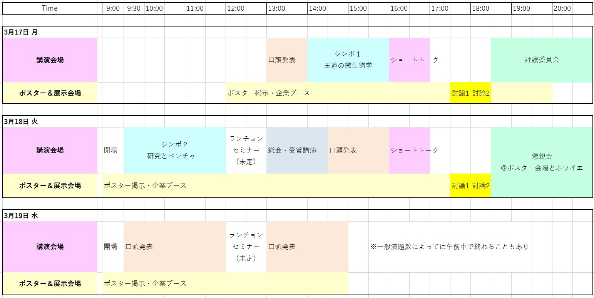

プログラム・日程表
日程表（仮）

シンポジウム
（敬称略）
■シンポジウム１．王道の微生物学・分子生物学；大御所の先生の話を聞きたい
オーガナイザー：尾﨑省吾、島田友裕
微生物をモデルとした分子生物学の発展を推進されている著名な先生方をお招きし、 これまでの研究のオーバービューをご紹介いただく予定です。先生方がどのような流れで 研究を推進し発展させてきたかに加え、研究の哲学や研究に向き合う姿勢なども共有いただくことで、 多くのことを学ぶことができる貴重な機会になると考えています。
- 小林一三（法政大学マイクロ・ナノテクノロジー研究センター、基礎生物学研究所）
適応的変異の大量検出、あるいは生き物はなぜ愛し合うのか - 片山 勉（九州大学）
大腸菌oriCの複製開始メカニズムと制御システム：オーバービューと展望 - 仁木宏典（国立遺伝学研究所）
異質なものへの寛容と多様性を容認する地球生命システムとしてのモデル微生物の研究 - 森 浩禎（Institute of Animal Science, Guangdong Academy of Agricultural Sciences）
縦と横の生物学
■シンポジウム２．研究と起業とのつながり；研究とベンチャーを両立させている先生の話を聞きたい
オーガナイザー：大島拓、森宙史、柿澤茂行
研究とベンチャー企業を両方しっかり運営されている先生方をお招きし、「研究から起業へ向かう過程 （起業に至る研究過程やきっかけ、苦労話など）、起業後の大学教員との両立、サクセスストーリー、 現在の研究の内容」などをご紹介いただく予定です。多様な将来像を描いている参加者にとって、 とても良いモデルケースを知ることができ、また微生物やゲノムといった基礎生物学の研究と企業や 社会とのつながりを参加者の皆さんと共有できる機会となると考えています。
- 福田真嗣（慶應義塾大学、株式会社メタジェン）
Brown Gem Story 〜メタジェンの挑戦〜 - 東樹宏和（京都大学、サンリット・シードリングス株式会社）
生物多様性・自然資本の評価から持続可能な産業活動の提案へ - 太田禎生（東京大学、シンクサイト株式会社）
二足の草鞋の履き心地（良かったこと、悪かったこと） - 末次正幸（立教大学、モデルナ・エンザイマティクス株式会社（元オリシロジェノミクス株式会社））
セルフリーDNA合成技術での起業からM&A売却までの4年間 - 中川 明（石川県立大学、ファーメランタ株式会社）
大腸菌を用いた多段階反応系を要する物質生産